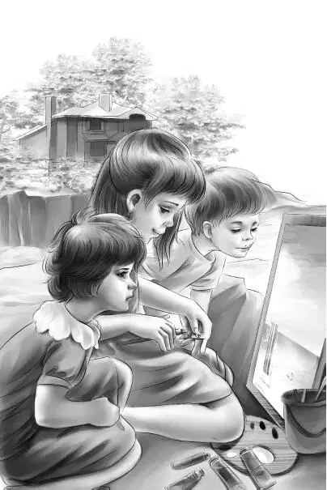

It was a few days later， and the girls were getting lunch. Grandfather came in from the store. He said， “While you were at the beach Mr. Fenton told me that the fishermen get up at three o’clock in the morning to take their boats out. That’s why we never see any men in the morning.”
Henry said， “Well， we know they come back at four or five in the afternoon. We’ve noticed that every day.”
“They look fine coming in one by one，” said Benny. “I’m going down to the beach to watch those boats. I don’t care if nobody speaks to me. But I’m going early. I don’t want to miss anything.”
Long before three o’clock the four Aldens went down to the sandy beach. Violet took her watercolors， brushes， and paper.
A few boats were coming in early. The fishermen started to shovel fish into boxes. Some of the fish were spread out in nets to dry. Others were packed in ice to go to Northport. Gulls were flying all around the wharf， trying to get leftover fish. They made a great noise.
“Fish smells awful， doesn’t it？” said Benny.
“Well， there is so much of it the whole town smells of fish，” said Henry. “I suppose it is the fish drying that smells.”
Just then the red-haired girl and her brother came slowly out of their house next to the store. They passed the Aldens.
“Oh， hello there！” said Jessie.
“Hello，” said the girl， but she did not stop. In fact she seemed to walk faster.
Jessie said sadly， “Nobody wants to be friends.”
“Maybe Max is right，” said Benny. “It will be dull if nobody is friendly.”
“Come on， Ben， don’t give up so easily，” Henry said. “If anyone can make friends， you can.”
After Violet had watched the boats for a while， she climbed up on the rocks. She could see the harbor better from there. The other Aldens stayed on the sand below.
“Oh， my！” Violet called down. “There are a lot of small pools of seawater all over the top of this rock. I’m going to use salt water for my watercolors！” So she washed her brushes in a pool of seawater.
She had just painted a blue band for the sea and some yellow sand， when she heard someone climbing up the rock behind her. She knew her family was sitting on the sand below her because she could see them. Who could this be？She turned her head to look. It was the red-haired girl！
“Oh， can I watch you？Do you mind？” asked the girl.
Violet was so surprised she could hardly answer. But she said， “Of course I don’t mind！I’m not much of a painter， though.”
The girl climbed the last rock and sat down beside Violet. “I just couldn’t keep away when I saw you painting！” she said.

Then Violet saw that her twin brother was right behind her.
“Are you twins？” she asked.
“Yes，” said the girl. “My name is Marie Moss， and Hal and I are just crazy about painting！There was a man up here when we were kids. He came here to paint the view. Ever since then， Hal and I have wanted to learn to paint.”
“Did the man show you how？” asked Violet. She looked from one to the other.
“Him？Oh， no！He chased us away，” said Hal with a frown. “He didn’t like to have us watch him.”
Marie said， “He didn’t stay here long. He painted just two pictures. One was of the harbor and one was our house. They were beautiful！”
“Then I guess you did watch him，” said Violet.
“Yes， we did，” said Hal. “The man never guessed. We knew the rocks better than he did. So we got behind a rock only a few feet away. We saw everything he did. We saw just what colors he used. He had oil paints.”
“And you remember all this time！” said Violet.
“Oh， yes！” said Marie. “He mixed a lovely blue with green. It looked just exactly like the water. Then he put purple in it！See？Under the rocks， it’s purple.”
“ You know，” said Violet slowly， “ you see things the way an artist would. Did you ever have any paints？”
“No，” said Hal. “We tried to make pictures with old crayons. But if we only had some paints—！”
The other Aldens heard what was going on. They climbed up the rocks and sat down.
“Are you going to stay very long？” asked Marie.
“Well， I think so，” said Jessie， smiling. “We like it here.”
“You see，” began the boy and stopped. He seemed to be having trouble with his words.
“Did you want something？” asked Benny.
The two strangers laughed a little. The girl said， “I guess we are scared.”
Benny said， “Say！You can’t be scared of us， can you？”
The twins looked at each other， and Marie said， “We aren’t supposed to talk to summer people.”
Henry said， “Come on！Don’t call us summer people. We just came up here to visit Port Elizabeth and see what it is like. A fishing village is new to us， you know.”
“We’ve been wanting to make friends with someone，” said Benny， “but it’s been very hard.”
Then Marie spoke very fast. “Everybody said you were stuck-up， but I said you weren’t. You aren’t stuck-up at all！I was right！I know we haven’t been very nice to you on this island， but Hal and I wondered....”
“What did you wonder？” asked Benny. “I’d like to know.”
The twins were quiet for a minute.
Then Marie said， “You see， we go to school in the winter. But the teachers don’t like it here. They don’t stay long. We had five teachers last year.”
“Imagine having five teachers in one year！” said Benny.
“It’s awful，” said Hal. “Every new teacher thinks we have forgotten everything. So they all start back at the beginning.”
“You don’t get very far that way，” said Henry.
“No，” said Marie. “The last teacher told us to study this summer， but we don’t know how. And we would love to learn to paint.”
Jessie said， “Violet learned to paint in school. She loves it， too.”
“Oh， would you teach us？” cried the twins.
“Of course，” said Violet. “I’ll do my best.”
“Oh， thank you，” said Marie， her eyes bright.
Hal said slowly， “We’d like to learn other things， too， but we don’t know how.”
Then Jessie woke up. Violet woke up. Henry woke up. As for Benny， he was already wide awake. They all saw what the twins really wanted.
Then the whole story came out. The Moss twins talked faster than ever.
Marie said， “The little children can’t read， and they love stories. All the children in this village ought to go to school. Even the little ones would love it if you taught it. And all our mothers would be so glad.”
“OK，” said Benny. “So you want to go to summer school. Henry， let’s teach school！Even I could teach. Just give me a few small kids， and I’ll teach ’em to read. And I could teach singing. Now how about that old schoolhouse？That’s empty， doing nothing.”
“That belongs to Miss Elizabeth Gray，” said Marie. “She has the key.”
“Is she cross？” asked Benny. “Would she let us use the schoolhouse？”
“She might. She isn’t cross， anyway. You could ask her. I wouldn’t dare，” said Marie. “It would be grand if we could use the schoolhouse， wouldn’t it？”
Henry began to climb down the rock. He said， “Never mind your painting this time， Violet. Let’s go！”
“Oh， do you dare？” asked Hal.
“Why not？” said Benny. “She doesn’t bite， does she？”
“No，” said Hal， laughing a little. “But we won’t go. You go.”
Henry smiled. He said， “Yes， I guess four of us will be enough. We’ll tell you later what she says.”
Just then a loud whistle sounded. It whistled and whistled.
“That’s for us！” cried Marie. “It’s the sardine factory！A school of sardines has come in. Sardines have to be canned quick. We have to go. Please don’t forget our school.”
“No， we won’t！” called Benny.
As they climbed down， Henry said to Jessie， “Remember my friend Larry in Adams College？He is going to live in a city this summer and help boys who live in a poor neighborhood catch up in school. Then they won’t be drop-outs. And here we are on an island， doing about the same thing.”
“I think it’s an exciting idea，” said Violet. “We didn’t think we would be schoolteachers this summer， did we？”
“That’s the last thing I thought of，” said Henry. “Just look at everybody going to work.”
Indeed somebody came out of every house. Sometimes there were three or four people from one house. They all hurried down to the factory.
“Well， well，” said Jessie. “We have made friends at last.”
“We made two， anyway，” said Benny.
By that time Marie and Hal were almost out of sight.